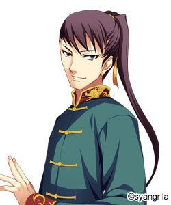
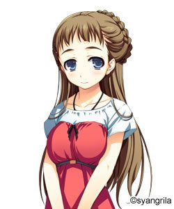
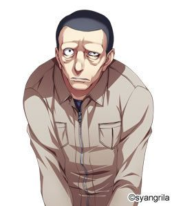
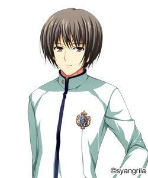
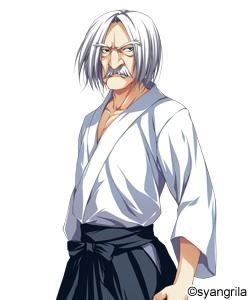
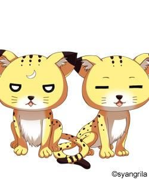
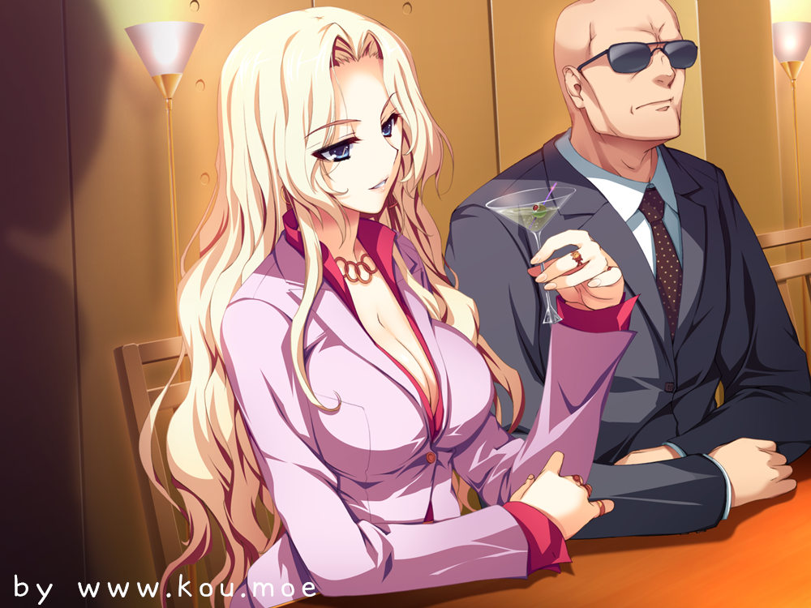
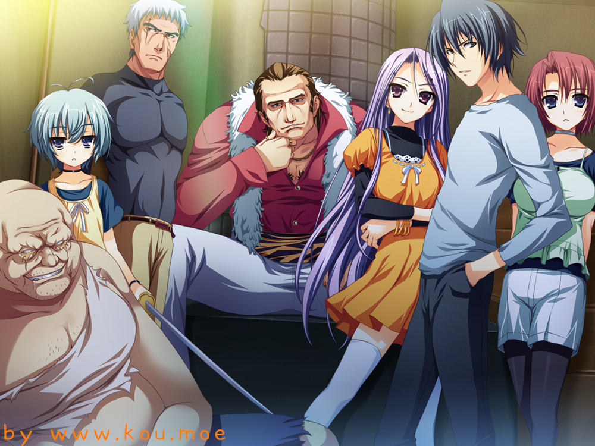
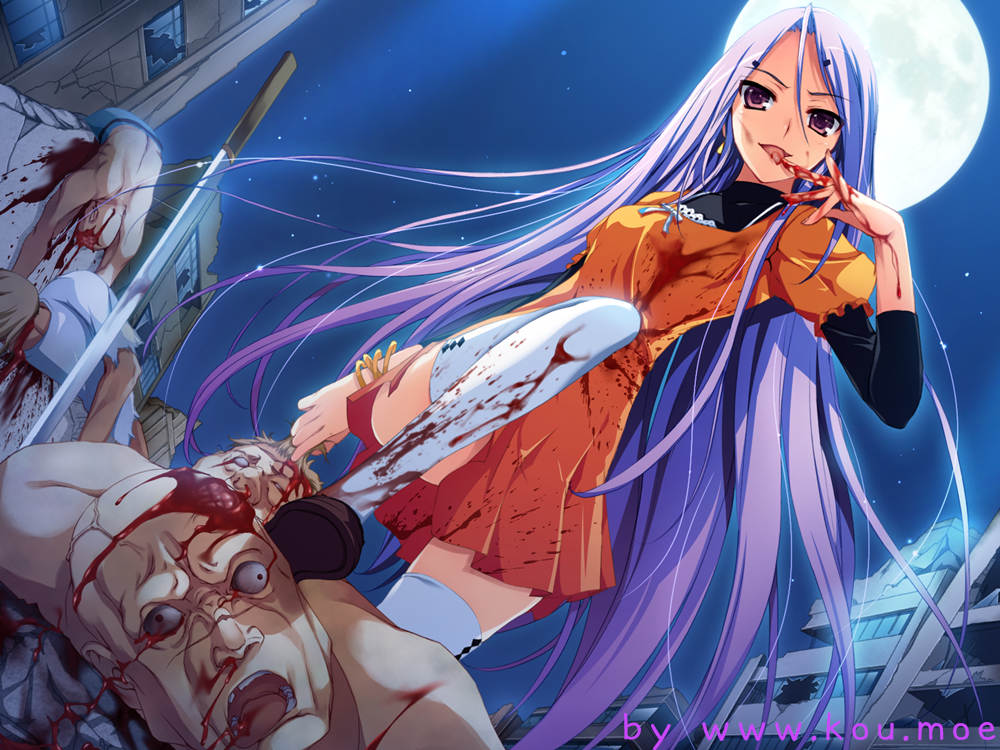
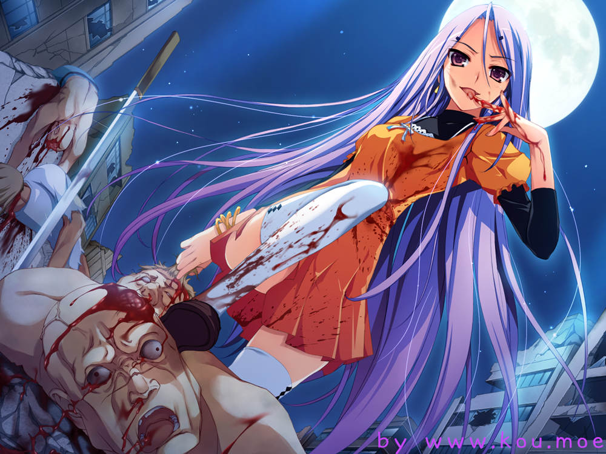

#1
Before reading :If you are not Chinese user,please read from [游戏资源分享/ Game resources sharing/ゲーム資源共有]. I think here is what you need.
游戏介绍： 入手之物、丧失之物、眼前的现实……
原画トモセシュンサク × 脚本衣笠彰梧氏的黄金组合奉上的、香格里拉的招牌游戏系列第3作。
在相当于前作『暁の護衛』、『暁の護衛～プリンシパルたちの休日～』 续篇的本作中，至今为止甘居女配角之座的南条薫、柊朱美升格成为可攻略的女主角！
男装保镖与讨厌（？）主人公的班主任。究竟会发生怎样的故事呢，令人万分期待！
比之前作品还要浓厚，而且以近2倍的篇幅编织的这个故事。
被数量众多的登场人物点缀，既有明亮学园的日常生活，也有硬派的严肃剧情展开……
不管对在意着他们的命运的粉丝来说，或是于对至今为止埋下的伏线耿耿于怀的粉丝而言，这款作品都毫无疑问是绝对不能错过的珠玉之作！！ 故事简介： 直升机飞舞于大都市的上空。报道摄像机映照出那个场所。
实现了经济成长的日本内包的唯一也是最大的负债。
『禁止区域』
不被承认为人类的人们苟延残喘的最后要塞。
数千的警察官，包围着禁止区域。
『禁止区域强制退去法案』执行之日。
那是一个不留漏网之鱼地捕获住在禁止区域的居民们的计划。
即将面临绝境的禁止区域的居民。
他们并非为了被责难而降生于此世。
只是想要活下去。不被束缚、自由自在、返璞归真。
只是想要作为一个人类被承认。
终于……突入的时刻来临了。
——对于海斗他们而言，这正是宣告日常生活终结的瞬间……
OP：
人物介绍：
身高：140cm三围：B70/ W51/ H74
兴趣：鉴赏音乐 特技：随机应变
喜欢的事物：自由 讨厌的事物：束缚
海斗的Principal（保镖对象），资产家千金。 基本上以自我为中心，急性子，但同时又兼具着原则与威严。无比讨厌被束缚，有着极端厌恶刻板守成的规矩与行动的倾向，与海斗一边拌嘴，一边逐渐建立着良好的关系。 「你这人啊，平常明明无可救药般废材，但不知为何……心里感到很充实呢」
南条 薫 （なんじょう かおる） CV：芹園みや 身高：170cm三围：NODATA 兴趣：锻炼 特技：剑术
喜欢的事物：被他人需要 讨厌的事物：下半身话题
海斗的同级生，以成为保镖为目标。
略有点努力过头，也老是乱来。其实是女性，伪装了性别，但知道这件事的除了家人以外只有海斗。伪装性别的理由似乎在于自己的家系……
「觉察到了，正在改变的自己。在心里的某处，我对此感到欣喜」
宮川 清美 （みやがわ きよみ） CV：さくらはづき 身高:168cm三围：B81/ W51/ H81
兴趣：整理 特技：射击
喜欢的事物：工作 讨厌的事物：不纯之物
有着21岁就取得国家公务员II种的经历，在24岁的现在，作为警部活跃着的非常优秀的警察官。
有着正义感太过强烈的部分，会不顾部下的阻止行动是美中不足之处。尊徳的姐姐。
「实在难以相信你和尊徳是同年。你知道的太多了」
柊 朱美 （ひいらぎ あけみ） CV：羽高なる 身高：164cm三围：B78/ W54/ H83
兴趣：免费的东西 特技：假笑
喜欢的事物：全部食物 讨厌的事物：朝霧海斗？
憐桜学园的教师，海斗他们的班主任。
平时虽然性格开朗精神，但只在面对海斗时尽管脸带笑容却显示出厌恶感。对免费派送的东西很没辙，有着收集的习惯。
「真讨厌呢朝霧君。别这么一副表情啊。至少在最后让我们笑着道别吧」
舞 （まい） 身高：154cm三围：B73/ W51/ H73
兴趣：拷问 特技：接近战
喜欢的事物：自己 讨厌的事物：信赖、羁绊、同伴
在禁止区域出生成长的少女。
即使对父亲也是毫不信任，只是为了自己的欲望、为了活下去而持续战斗着。其后与她邂逅的海斗，因为她的存在，应该步向的未来开始受到了影响。
「不管是敌人还是同伴都无所谓。全都杀掉。不是很有意思么？ 折磨人这回事」
南条 武志 （なんじょう たけし） 身高：165cm兴趣：钓鱼 特技：钓鱼
喜欢的事物：钓鱼 讨厌的事物：保镖
薫的弟弟，年龄小2岁，处于稍微有点嚣张的年龄。
因为被父亲强行拟定的成为保镖的道路与自己本身的没有才能而烦恼着。与海斗邂逅后，开始摸索全新的可能性。
「从我的角度讲，如果是海斗的话倒是能认同。和海斗在一起时的薫姐，非常幸福的样子。」
宮川 直人 （みやがわ なおと） 身高：175cm兴趣：学习 特技：保镖
喜欢的事物：咖啡 讨厌的事物：日本茶
薫的未婚夫候补之一。小胡子很配的花花公子。
担任政界要人保镖的优秀保镖。
尊重着薫的意愿，考虑着只要挂着妻子的头衔就可以接受。政治家武藤的保镖。尊徳的哥哥，宮川家次男。
「嗯……叫做新山君么。这次审查结束之后，向你介绍我的妹妹吧」
 龍 （りゅう） 身高：180cm兴趣：不明 特技：不明
喜欢的事物：名誉 讨厌的事物：无名
詩音的哥哥，有着保镖资格的23岁青年。
知能技术都能高超，也有着天赋的才能，是个极其稀有的存在。
祖先们曾经是名家，但如今已是默默无闻。基本上是一个平易近人的大哥，但一旦涉及自己的出生与日本人的话题、妹妹的话题就会开始开不了玩笑。
「不是一般人啊新山。好久没有这么有趣了」
詩音 （しおん） 身高：169cm三围：B95/ W59/ H87
兴趣：不明 特技：格斗技
喜欢的事物：兄长 讨厌的事物：日本人
陪伴着安分不下来的兄长来到日本。中日混血儿。举止沉稳成熟，但轻视着日本人。
文武双全，擅长和兄长不相伯仲的中国功夫。
「原来如此，果然像是日本人会考虑的事呢。你个脑残竟然想着能赢过龍」
中里 亮 （なかざと りょう） 身高：174cm兴趣：书法 特技：和人变亲近
喜欢的事物：美丽之物 讨厌的事物：没有特别的
在国外习得保镖资格的精英。
父亲是原政治家，亡母是著名女演员。
源蔵特别看待的优秀保镖，在某个情况下来到二階堂宅邸。因为继承了伟大的基因么，是个有着吸引周围人魅力的青年，在瞬间就获得了二階堂宅邸的人们的信赖。
「讨厌我，对我警戒都是你的自由。但是只有我是真正的同伴。请不要忘记」
安藤 康高 （あんどう やすたか） 身高：187cm 兴趣：鉴赏自然 特技：花语
喜欢的事物：花、土 讨厌的事物：惹人发火
伴随着二階堂宅邸之前园丁的引退，作为新的园丁来到二階堂宅邸的壮男。
年龄在25~30之间，但看上去比实际年龄要大一些。面孔和身体棱角分明，也有肌肉，但精神脆弱。平常老是出错，但在护理庭院上有着一致好评。
「啊啊、啊啊、我又多嘴了么。真的是一直以来我都很没用啊，十分抱歉十分抱歉」
柏 （はく） 身高：无记录 三围：无记录
兴趣：无 特技：消除气息
喜欢的事物：海斗、苹果 讨厌的事物：大群人
年龄不详、出身不详的谜云笼罩的少女。
非常安静无口。本人不愿意说过去的事，口称不记得了，但貌似知道海斗的事。连名字都不记得的少女，在与彩邂逅后自行得到了柏这个名字。
「不要、怪海斗……我和海斗在一起、只是、如此而已」
林 真己登 （はやし まこと） 身高：174cm兴趣：麻将、太鼓 特技：干架
喜欢的事物：钱 讨厌的事物：有钱人
入学憐桜学园的一般家庭的青年。
是个问题儿童，佐竹也无可奈何的捣蛋鬼。有着会因为小事而动不动发怒出手的一面。青梅竹马的关系很好，但以某时为界线开始回避她。麻将强到曾经犹豫是否要成为职业选手。
「这个家伙也是那个家伙也是，全都瞧不起人。说到底这世道，有钱才是王道是吧」
 田宮 沙代 （たみや さよ） CV：佐々留美子 身高：154cm三围：B84/ W69/ H96
兴趣：全部家务 特技：裁缝
喜欢的事物：照顾真己登 讨厌的事物：可怕的东西
就读于旁边车站的学园的真己登的青梅竹马。
从前开始就和真己登关系很好学校也一样，但因为真己登入学憐桜学园而分别。无论对谁都很温柔喜欢照顾人，但对真己登是特别的。然而心意与真己登无法相通，烦恼着。
「あっぽ、ぷぅぷぅ、あぽぷぅでし? 最近流行的歌的说。真己酱也来一起唱」
相馬 忠夫 （そうま ただお） CV：子太明 身高：NODATA 兴趣：不明 特技：指挥、急袭
喜欢的事物：讨价还价 讨厌的事物：弱者
在禁止区域中，获得了绝对信赖的男人。
压倒性的强大令无数的人感到恐惧，但对认同的人也会以礼相待。曾经与海斗的父亲雅樹交过手。
「原来如此，对你有点印象。那个时候的感冒药派上用场了么？」
桜坂 風子 （さくらざか ふうこ） 身高：172cm 三围：B88/ W60/ H88
兴趣：收集装饰品 特技：人员管理
喜欢的事物：女儿、工作、香烟 讨厌的事物：贫穷
经营风俗店 『New rise』 的年轻女社长。
年轻的时候自己也曾在花街风俗店出卖身体。有着名为 『絆』 的独生女儿，非常溺爱着。因为工作性质关系父亲是谁不明，但没有介意的样子。此外在暗地里做着赚取资金的危险工作，虽然没有直接见过面，知道朝霧父子的事。
「所谓母亲，也不容易啊。然而从心底里爱着。孩子是宝物哦」
 須藤 （すどう） 身高：175cm兴趣：自言自语 特技：话术
喜欢的事物：女人 讨厌的事物：套亲近
作为死刑囚犯关押在监狱里的禁止区域出身者。
户籍、经历不明。須藤也不能确定是不是本名。声称知道禁止区域的一切，以释放自己为目的和清美进行交涉。
「和我联手，不会让你后悔的。从前开始，我和朝霧这个姓就很合拍呀」
桜坂 絆 （さくらざか きずな） 身高：115cm兴趣：存钱 特技：和动物关系变好
喜欢的事物：没有特别的 讨厌的事物：没有特别的
風子的女儿，虽然还很小但已经有了明确的意志。
有着用绰号称呼亲近人物的习惯，称呼海斗为 「かーくん」 。另外还有「あーちゃん」、「ろーるくん」等称呼。因为被动物喜欢的体质的关系么，就算是警戒着人类的野狗，在絆的面前也会开始撒娇。
「好像是被动物先生喜欢的体质。为什么会这样，不是很清楚」
岡崎 隆之介 （おかざき りゅうのすけ） 身高：176cm 兴趣：酒 特技：经营
喜欢的事物：店、風子、絆 讨厌的事物：風子的敌人
在『New rise』 工作的風子的左右手，兼具冷静与热血的男人。
因为曾经被風子救过性命，将全部的忠诚都奉献给了風子。因为发型的原因被絆取了 「ろーるくん」（卷发君）这个绰号，以此为契机改变了发型，但直到现在还会被这么称呼，心里在意着。
「絆大人。虽然无法直接告诉您，您的直觉大概是正确的。」
？？？ 身高：NODATA 兴趣：NODATA 特技：NODATA
喜欢的事物：NODATA 讨厌的事物：NODATA
全身覆盖着外套的男人。
平常不会现身的这个男人，为了达成某个目的而行动着。为此不择手段，不管是什么人都会毫不犹豫地杀死。
「他已经是作为完全的人类完成之身。事到如今我已经没有任何要说的了」
二階堂 彩 （にかいどう あや） 身高：158cm 三围：B87/ W56/ H85
兴趣：TV游戏 特技：手指灵活（限定）
喜欢的事物：动物 讨厌的事物：臭的东西
麗華的妹妹，尊徳的Principal（保镖对象）。
展示出了让人无法想象她是妹妹的发育程度，对此麗華抱有自卑感。彩也憧憬着才色兼备的麗華，怀有自卑感。不擅长应对男性，但对海斗敞开了心扉。最近好像也开始习惯尊徳，良好的主从关系逐渐建立中。
「姐姐的事就多多拜托你了。只要海斗在，一定没问题的」
月 身高：142cm 三围：B74/ W52/ H75
兴趣：打扫 特技：怪人行为
喜欢的事物：打扫 讨厌的事物：垃圾、脏东西
在二階堂家担任女仆长的少女。
在打扫方面比任何人都要啰嗦，完美地打扫。
对口吐淫荡单词也没有任何的抵抗，常常与海斗表演相声。
相当害怕黑暗，睡觉时一定要点着灯睡觉。
「用不着海斗来说，保护麗華大小姐她们是我的使命」
倉屋敷 妙 （くらやしき たえ） 身高：155cm三围：B80/ W59/ H83
兴趣：睡眠 特技：无
喜欢的事物：欢乐的事 讨厌的事物：困难的事
倉屋敷重工的独生女，性格任性的家伙。
保镖由母亲制作出的机器人担任。没有朋友，但升上2年级后和麗華她们一起玩的情形变多了。头脑非常笨，无论什么事都会轻易放弃。
「虽然搞不懂太难的事，但那就是两个人两情相悦不是吗？」
神崎 萌 （かんざき もえ） 身高：164cm三围：B88/ W59/ H87
兴趣：吃 特技：无
喜欢的事物：食物、古武术 讨厌的事物：空腹
使用古武术的格斗大小姐。
她的实力甚至凌驾在以成为保镖为目标的男生之上。虽然正义感强烈，但有着天然呆之处，偶尔也会有空忙活困扰周围的事。
「只是注视着心里就暖呼呼的……和大家在一起的现在，十分开心呢……」 佐竹 明敏 （さたけ あきとし） 身高：188cm 兴趣：不明 特技：教育
喜欢的事物：香烟、酒、小孩 讨厌的事物：某人
原二階堂家的保镖，现在担任憐桜学园的校长。
将海斗带出到表面世界的人物，也是唯一知道海斗过去的男人。对海斗貌似有着特别的感情，特别关照他，但真意不明。
「果然和父亲很像。看着现在的你，就好像回到了过去」
二階堂 源蔵 （にかいどう げんぞう） 身高：170cm 兴趣：读书 特技：不明
喜欢的事物：优秀的人才 讨厌的事物：朝霧
二階堂家当主。性格严格，但对女儿们很心软。
母亲已逝世，如今独身，但没有再娶。讨厌海斗，想要拆散他和麗華，但现状进展不顺利。
「中里君。我可是期待着你的表现。尽快从那个垃圾的手里保护麗華」
宮川 尊徳 （みやがわ たかのり） 身高：171cm兴趣：全部运动 特技：体术
喜欢的事物：麗華大小姐 讨厌的事物：中里亮
名家宮川家14人兄妹中最小的孩子。
因为不知该如何面对哥哥姐姐们全员，和家人有点疏远。
自尊心强，看似冷静，但其实是个意外热血的好男儿。海斗的同级生，友人。虽然互相讨厌着但和对方关系最好乃是不可动摇的事实。因为最初希望成为麗華的保镖，对妹妹的严厉态度十分醒目，但最近好像也不是那么不情愿了。喜欢麗華。
「我讨厌中里。那家伙……和我的角色定位不是重复了吗！」
錦織 侑祈 （にしこおり ゆうき） 身高：175cm兴趣：搭讪 特技：腕力
喜欢的事物：H 讨厌的事物：学习
倉屋敷重工制作的最新型机器人。
外观十分精密，看不出与人类的区别。
身体能力凌驾在人类之上，耐久力也近乎无穷无尽。然而只有在身为Principal的妙遭遇危险的时候才能发挥本领。
「不是说女人变得开放了么。我也是时候想体验一下了，呐？」
杏子 （あんず） 身高：162cm三围：B90/ W55/ H84
兴趣：没有特别的 特技：干架
喜欢的事物：温暖 讨厌的事物：孤独
与海斗一起度过幼年时光的少女。
对杏子来说海斗是最爱之人，是她的一切。
然而自从海斗突然消失踪影，认为自己毫无价值，过着空虚的生活。虽然追寻着海斗的脚步来到了表面世界……
「我一个人也能活下去。自作多情受伤的心什么的给我消失……」
神崎 佃吾郎 （かんざき でんごろう） 身高：178cm兴趣：锻炼 特技：古武术
喜欢的事物：萌、武道 讨厌的事物：无志向之人
萌的祖父，神崎流的师范代。
虽年岁已老但实力压倒他人，连萌都胜不过他。神崎之名、特别是佃吾郎的影响力十分之大，现在也有着在有争议时进行仲裁解决事态的力量。
「绝对不可原谅……看我杀了你……」
奥本 雷太 （おくもと らいた） 身高：164cm兴趣：收藏 特技：熬夜
喜欢的事物：手办 讨厌的事物：轻浮的女人
和海斗与薫他们同样是保镖候补生。
他的实力与外貌不符十分优秀。然而体臭与口臭十分严重，几乎没有朋友。担任黒堂的保镖，但却被身为Principal的她超级厌恶着。深爱二次元的雷太，但是……
「真、真过分！ 我又是这般待遇么！ 啊啊、我的宝贝手办的头断了！」
黒堂 鏡花 （こくどう きょうか） 身高：158cm三围：B75/ W53/ H81
兴趣：读书 特技：料理
喜欢的事物：清爽的东西 讨厌的事物：烦人的东西
麗華她们的同级生，雷太的Principal。有着傲慢性格与行动力的少女，但内心里也有着温柔的一面。有着过去护理家人的经验，也擅长料理。
「脑子乱成一团了。这真的是现实中的事么？」
倉屋敷 亜希子 （くらやしき あきこ） 身高：158cm三围：B82/ W60/ H84
兴趣：园艺 特技：电脑
喜欢的事物：美丽的东西 讨厌的事物：原始的东西
妙的母亲，倉屋敷重工社长。
她的头脑，从制作錦織侑祈一事也能看出，有着世界顶级的实力。丈夫已经逝世。
「莫非是我搞错了？ 已经搞不清楚了。 什么才是正确的」
 ソナタandカナタ 很遗憾不可能拟人化的小豹。
因为彼此外貌名字相似的关系，偶尔会被叫错名字，然后于其时发怒。
游戏资源分享/ Game resources sharing/ゲーム資源共有：
汉化组：晓护2015临时汉化组
百度贴吧汉化补丁发布帖：http://tieba.baidu.com/p/3951877987 汉化补丁原帖：找不到的弱气渣渣……
在此感谢汉化组的辛勤劳动~
Warm tips for non-Chinese users：
① If you download The main game(ゲーム本体) ,foreign users please run【暁の护卫～罪深き终末论.exe】
② Our website provide the Game download ：the Online file Storage（オンラインストレージ）of games .
③ All resources are provided by clients whose copyright is self-explanatory; no party is allowed to copy any resources without the consent from the owner.
申明：汉化硬盘版从百度贴吧say花火吧获取，该汉化硬盘版资源解释权归say花火吧。 汉化硬盘版密码：say花火【password:say花火】
汉化硬盘版/The main game/ゲーム本体： ———————————————————————— 百度网盘/ the Online file Storage 1/オンラインストレージ一：http://pan.baidu.com/s/1pLo1uzD ————————————————————————
汉化补丁：http://pan.baidu.com/s/1mgkXKJe 提取码: 2k8m
————————————————————————
游戏CG+OST+立绘【密码：www.kou.moe】
Game CG+OST+Stand painting【password:www.kou.moe】
————————————————————————
CG： http://pan.baidu.com/s/1nvoktvj ————————————————————————
OST：http://pan.baidu.com/s/1jI5RqS2 ————————————————————————
OST试听系统【OST Audition system】：
——————————————————————
——————————————————————
立绘/ Stand painting：http://pan.baidu.com/s/1c17PjgO
个人吐槽： 剧本衣笠的硬伤真是没办法，正线写的中规中矩，其他七七八八的路线写的和鬼一样的……话说既然其他线要这样敷衍的话不如没有好了啦！
但以上是玩通全线的后话了，鄙人在此就推荐各位要推的路线吧，首先是A线的丽华线【而且要丽华bad end一次后才能通happy end】和熏线，清美线推还是推一下，这位和后面的B、C两线有点承接关系。B线朱美必推！沙代这条诡异的路线我就不做评价了……C线舞和杏子线必推！舞线是C线的正线，杏子线就好像是舞线的another end一样，说的直观点就是玩家不想待在禁止区域想要个普通生活你就推杏子线呗。衣笠其中几个硬伤在于对柏线描写的缺失和对一些隐藏人物出现的伏笔的空白……虽然将柏追随海斗的原委解释了，但是作为一条线来说还是有点短的……雅树的出现简直了……海斗遇到强敌他就出现了？喂喂喂！伏笔给一个好吗……我知道你是爱儿子的好爸爸……麻烦解释一下这种出现就是为了打个“辅助”的剧情好吗……当然有雅树海斗就能救下丽华这是不可置否的……
B线里的绊酱超级超级可爱……果然是基因好【绝对是她爸的基因！】……萌到逼人转萝莉控的形象……那双眼睛真的可爱到炸裂~
朱美线就是心里玩完不舒服……斗爷的确很男人地承担起了自己该承担的责任……可是可是可是海斗不是该和丽华在一起吗？！唔……看在小绊的份上不计较了……
C线才是全剧正线啊……表白斗哥！可我看的很不过瘾……桑心……
OP都快听到耳朵烂掉了~OP1和OP2都好赞的说啊！OP2燃到爆了~男声赞~
我相信衣笠爱的是丽华X海斗这一对……所以在之后的续作里的暗线埋了丽华因为一场爆发性的传染病病倒的细节……呜啦啦啦……还顺便埋了个150年的伏笔我靠……老娘要你写续续作！太过分了！你能不能好好说话，丽华到底还在不在人世啊喂！斗哥到底有没有恢复记忆……剪不断理还乱啊……好心疼这对……
游戏画面鉴赏：  
 
 游戏攻略/ゲーム攻略/ Walkthrough： 中文版/ Chinese version： 今天的晚饭
简单地回忆
直接回去
去跑步
跑吧
A线
save1
车站前
在月的房间睡觉
学习的？
少点
去龙的的房间。
去浴室。
吃鱼
save 2
作为朋友回应
回到学园
不去
在意丽华
收集
丽华
去海边
去丽华那里
放弃
搭句话
侑祈
什么也不做
save3
和大家一起去商店街
丽华bad end
load save3
留下来
丽华 end
load save2
作为男人回应
去书店
save4
去
在意翔子
收集
乖乖的等着吧
清美end
load save4
不去
在意丽华
收集
薰
save5
回到酒店
放弃再次劝说
回到旅馆
放弃
人工呼吸
诗音end
load save5
追薰
去薰那里
说服薰
避而不谈
直接推倒
薰
轻轻碰触薰的大腿
和大家一起去商业街
薰end
B线
load save1
学园
还是不睡了
兴趣的？
少点。
去直人的房间
稍微错开点时间吧。
把薰叫来
作为朋友回应
回到学园
不去
在意丽华
收集
save6
去New Raise
朱美end
load save6
再说两句
沙代end
C线
load save1
不出去
在月的房间睡觉
未来的？
发出大声的行动
椅子
去浴室。
回房间
作为朋友回应
去书店
不去
在意翔子
收集
save7
探索组织
追去
去找舞
不感谢
舞
舞end
load save7
探索禁止区域
save8
目送她离开
找到了枫
不感谢
枫
枫end
load save8
追去
待在自己房里
不感谢
save9
杏子
杏子end
load save9
柏
柏end
load save9
加奈子
加奈子end
load save9
翔子
翔子end
结束 日文版/ Japanese version： http://seiya-saiga.com/game/syangrila/goei2.html